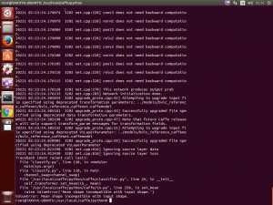
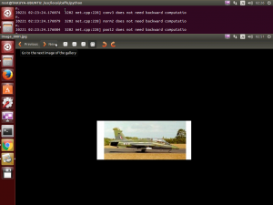

前回はHyper-V上に作成したUbuntu上にcaffeをインストールしました。今回は実際に使ってみます。
概要
caffeは大まかに下記の手順で実施します。
- データセットの用意
- データの格納
- パラメータの調整
- 学習
- 評価
今回は、学習が完了した状態で、評価を行います。 ちなみに、データセットとは、学習(訓練)用、評価用の2種から構成されるデータ群です。 通常、学習する際に使用したデータを、検証用に使うことはできません。 学生のテストで試験範囲発表で問題そのものが公開されるわけではないのと同じです。学生を「テスト」する意味がないですから。 また、今回のテストはあらかじめ用意されているものを使います。 ネット上で解説されているものと同じですが、他と違うのは、きちんと説明を加えます。 何をしているのかよくわからないし、「おまじない」的な説明は極力避けます。
準備
モデルの取得
モデルとは、どういう手順、経路、方法でデータの学習を行うかを定義した多層ニューラルネットワークを指す。 モデルは、Caffe Model ZooというCaffeの学習済モデルを公開したWikiがあり、そこで有力なモデルが公開されている。 下記のコマンドを実行します。caffeのフォルダは前回と同様であるものとします。 必要に応じてsudoするなりします。 [code lang=”sh”] cd /usr/local/caffe/ python scripts/download_model_binary.py models/bvlc_reference_caffenet [/code] 実行したスクリプトは大量のデータ (233MB) をダウンロードしますので時間がかかります。
関連データの取得
ilsvrc12の学習、評価に用いられる画像ファイル名の一覧、ラベル一覧などをダウンロードします。 [code lang=”sh”] cd /usr/local/caffe/data/ilsvrc12/ chmod u+x get_ilsvrc_aux.sh ./get_ilsvrc_aux.sh [/code]
画像データの取得
検証に用いる画像のデータセットCaltech 101をダウンロードします。 ダウンロード先は任意です。 126MBあるので、これも時間がかかります。 [code lang=”sh”] cd /usr/local/caffe/ mkdir dataset cd dataset mkdir caltech101 wget http://www.vision.caltech.edu/Image\_Datasets/Caltech101/101\_ObjectCategories.tar.gz tar xf 101_ObjectCategories.tar.gz [/code] これで準備完了です。
検証
分類
実際に画像を入力して分類してみます。 前提として、pycaffeをコンパイル済みであるものとします。 [code lang=”sh”] cd /usr/local/caffe/python python classify.py –raw_scale 255 /usr/local/caffe/dataset/caltech101/101_ObjectCategories/airplanes/image_0001.jpg /usr/local/caffe/dataset/caltech101/result.npy cd /usr/local/caffe/dataset/caltech101/ [/code] classify.py によれば、 [code lang=”python”] #!/usr/bin/env python “”” classify.py is an out-of-the-box image classifer callable from the command line.
By default it configures and runs the Caffe reference ImageNet model. “”” import numpy as np import os import sys import argparse import glob import time
import caffe
def main(argv): pycaffe_dir = os.path.dirname(__file__)
parser = argparse.ArgumentParser() # Required arguments: input and output files. parser.add_argument( “input_file”, help=”Input image, directory, or npy.” ) parser.add_argument( “output_file”, help=”Output npy filename.” ) # Optional arguments. parser.add_argument( “–model_def”, default=os.path.join(pycaffe_dir, “../models/bvlc_reference_caffenet/deploy.prototxt”), help=”Model definition file.” ) parser.add_argument( “–pretrained_model”, default=os.path.join(pycaffe_dir, “../models/bvlc_reference_caffenet/bvlc_reference_caffenet.caffemodel”), help=”Trained model weights file.” ) parser.add_argument( “–gpu”, action=’store_true’, help=”Switch for gpu computation.” ) parser.add_argument( “–center_only”, action=’store_true’, help=”Switch for prediction from center crop alone instead of “ + “averaging predictions across crops (default).” ) parser.add_argument( “–images_dim”, default=’256,256’, help=”Canonical ‘height,width’ dimensions of input images.” ) parser.add_argument( “–mean_file”, default=os.path.join(pycaffe_dir, ‘caffe/imagenet/ilsvrc_2012_mean.npy’), help=”Data set image mean of [Channels x Height x Width] dimensions “ + “(numpy array). Set to ‘’ for no mean subtraction.” ) parser.add_argument( “–input_scale”, type=float, help=”Multiply input features by this scale to finish preprocessing.” ) parser.add_argument( “–raw_scale”, type=float, default=255.0, help=”Multiply raw input by this scale before preprocessing.” ) parser.add_argument( “–channel_swap”, default=’2,1,0’, help=”Order to permute input channels. The default converts “ + “RGB -> BGR since BGR is the Caffe default by way of OpenCV.” ) parser.add_argument( “–ext”, default=’jpg’, help=”Image file extension to take as input when a directory “ + “is given as the input file.” ) args = parser.parse_args()
image_dims = [int(s) for s in args.images_dim.split(‘,’)]
mean, channel_swap = None, None if args.mean_file: mean = np.load(args.mean_file) if args.channel_swap: channel_swap = [int(s) for s in args.channel_swap.split(‘,’)]
if args.gpu: caffe.set_mode_gpu() print(“GPU mode”) else: caffe.set_mode_cpu() print(“CPU mode”)
# Make classifier. classifier = caffe.Classifier(args.model_def, args.pretrained_model, image_dims=image_dims, mean=mean, input_scale=args.input_scale, raw_scale=args.raw_scale, channel_swap=channel_swap)
# Load numpy array (.npy), directory glob (*.jpg), or image file. args.input_file = os.path.expanduser(args.input_file) if args.input_file.endswith(‘npy’): print(“Loading file: %s” % args.input_file) inputs = np.load(args.input_file) elif os.path.isdir(args.input_file): print(“Loading folder: %s” % args.input_file) inputs =[caffe.io.load_image(im_f) for im_f in glob.glob(args.input_file + ‘/*.’ + args.ext)] else: print(“Loading file: %s” % args.input_file) inputs = [caffe.io.load_image(args.input_file)]
print(“Classifying %d inputs.” % len(inputs))
# Classify. start = time.time() predictions = classifier.predict(inputs, not args.center_only) print(“Done in %.2f s.” % (time.time() - start))
# Save print(“Saving results into %s” % args.output_file) np.save(args.output_file, predictions)
if __name__ == ‘__main__‘: main(sys.argv) [/code] とあります。 入力と出力は必須なので、最後の2つが入力画像と出力になります。 出力はnumpy標準のファイル形式です。 --raw_scale 255 は、前処理の前にこのスケール値だけ乗算するとあります。 OpenCV 備忘録 によれば、入力値[0:1]をImageNetモデルの[0:255]に変更するとのこと。 実行後、うまくいって結果を確認、できません。 無慈悲なエラーが出ます。 
{kind=link}
[code lang=”sh”] File “classify.py”, line 138, in main(sys.argv) File “classify.py”, line 110, in main channel_swap=channel_swap) File “/usr/local/caffe/python/caffe/classifier.py”, line 34, in __init__ self.transformer.set_mean(in_, mean) File “/usr/local/caffe/python/caffe/io.py”, line 258, in set_mean raise ValueError(‘Mean shape incompatible with input shape.’) [/code] イラっとしますが、解析すると、*/usr/local/caffe/python/caffe/io.py** の258行目が例外を投げているように見えます。 Google先生に聞いてみるとOSX10.10でCaffeをインストール、リファレンスモデルで画像を分類にて回答が。 [code lang=”python”] if ms != self.inputs[in_][1:]: raise ValueError(‘Mean shape incompatible with input shape.’) [/code] を [code lang=”python”] if ms != self.inputs[in_][1:]: print(self.inputs[in_]) in_shape = self.inputs[in_][1:] m_min, m_max = mean.min(), mean.max() normal_mean = (mean - m_min) / (m_max - m_min) mean = resize_image(normal_mean.transpose((1,2,0)),in_shape[1:]).transpose((2,0,1)) \ (m_max - m_min) + m_min #raise ValueError(‘Mean shape incompatible with input shape.’) [/code] に直せばよいとのこと。 修正後、再度実行すると、result.npyが出力されたことを示すメッセージが。
結果
うきうきしながら、result.npyを開くと。 開けません。というかバイナリファイルなのか読めません。 これを人間の目でわかる結果に直す必要があります。 Caffeで手軽に画像分類にて、この結果を人間の目でわかる結果に直すスクリプトを公開してくださっています。感謝です。 [code lang=”sh”] cd /usr/local/caffe/python gedit show_result.py [/code] エディタを開いて下記のスクリプトを保存します。 [code lang=”python”] #! /usr/bin/env python # -*- coding: utf-8 -*- import sys, numpy
categories = numpy.loadtxt(sys.argv[1], str, delimiter=”\t”) scores = numpy.load(sys.argv[2]) top_k = 3 prediction = zip(scores[0].tolist(), categories) prediction.sort(cmp=lambda x, y: cmp(x[0], y[0]), reverse=True) for rank, (score, name) in enumerate(prediction[:top_k], start=1): print(‘#%d | %s | %4.1f%%’ % (rank, name, score * 100)) [/code] 保存後。、 [code lang=”sh”] cd /usr/local/caffe/python python show_result.py ../data/ilsvrc12/synset_words.txt /usr/local/caffe/dataset/caltech101/result.npy #1 | n04552348 warplane, military plane | 84.8% #2 | n04008634 projectile, missile | 5.5% #3 | n02690373 airliner | 5.1% [/code] という結果が出力されます。 
{kind=link}
入力画像 /usr/local/caffe/dataset/caltech101/101_ObjectCategories/airplanes/image_0001.jpg が戦闘機である確率が84.8%だと判断されました。 素晴らしい。
Conclusion
長かったですが、きちんとcaffeが動作する様を確認できました。 次回はモデルを構築できたらな、と思います。